Tile Types
Create and configure tiles in the Web Admin. Select Home Assistant entities in the Bridge options first.
Home Assistant tiles show entity data or control your devices. Local tiles provide clocks, text, folders, animations, and spacing.
All tiles share title, icon, color, size, and position settings. For types with a popup, choose whether a tap or long press opens it; the popup takes on the tile's icon, circle, and color. See On-Device UI for how popups behave.
Press Enter in the title field for a second line. The two lines share the same vertical center as a single-line title; text that does not fit ends in .... The display, popup header, and Web Admin preview use the same title.
Sizes: every tile resizes in half steps from 1×1. All tiles except Weather, Media, Text, and Animation can also be half a cell high; they then show the title and state or value next to the icon, without a bar.
Colors: each tile has an icon color, an icon circle, and a tile color (Global, Custom, or From icon). Rules color the icon or tint the tile while an entity has a matching state, for example by temperature or by a text state.
Home Assistant Tiles
These types show or control a Home Assistant entity that you selected in the Bridge options.
Sensor
Shows a numeric or text-valued sensor.* entity. Configure the unit, decimals, value size, and an optional gauge with a minimum and maximum.
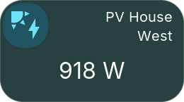
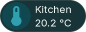
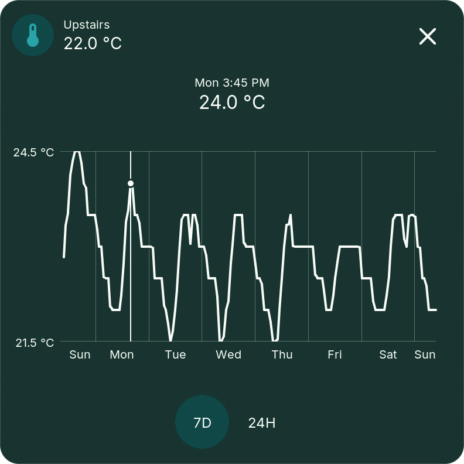
Popup: the current value in the header and a 7D or 24H history: a graph for numbers, or a timeline and Activity list for text states. Touch the graph and move your finger to read an earlier value; the time and value appear above the graph, and the marker stays where you let go.
A local DS18B20 input can also supply the value without Home Assistant; local inputs have no Home Assistant history popup.
Binary Sensor
Shows a binary_sensor.* entity with the matching state and icon, such as Open/Closed or Motion/Clear. Unknown and unavailable states are shown separately.
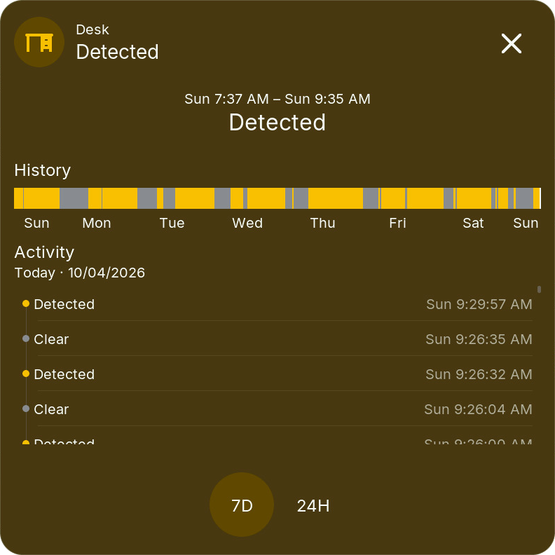
Popup: a 7D or 24H state timeline and Activity list.
Number
Changes a number.* or input_number.* entity. The tile shows its current value and unit; the popup uses the minimum, maximum, step, and input mode supplied by Home Assistant.
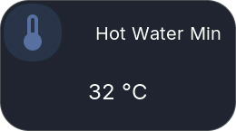
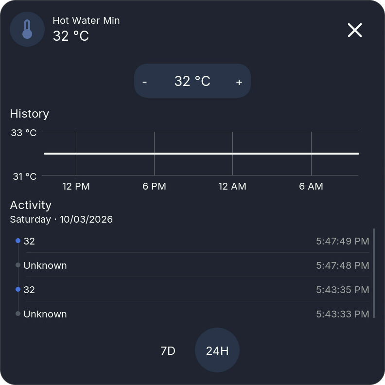
- Slider values use a centered slider with the value above it. Release the slider to send the final value.
- Temperatures use − / value / +, like the Climate target control.
- Other box-mode values use a bounded roller or step buttons, depending on their range.
Popup: the control above a numeric history graph and Activity for 7D or 24H. History requires the entity to be recorded by Home Assistant.
Select
Changes a select.* or input_select.* entity using its current Home Assistant options. The tile shows the selected value; the popup uses the same dropdown interaction as Settings.
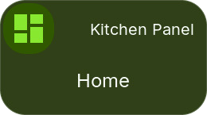
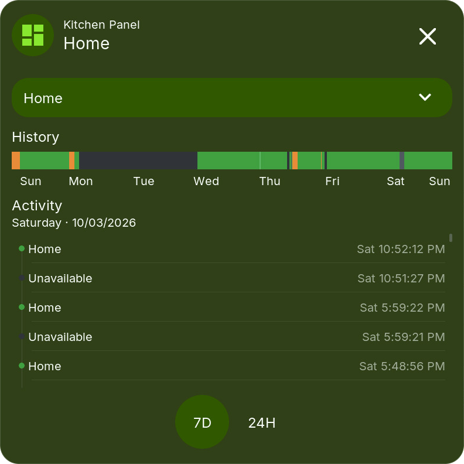
Popup: the dropdown above a compact timeline and Activity for 7D or 24H. An unavailable entity or incomplete option list disables selection. To operate another display's view, select that display's View entity in the Bridge first.
Date/Time
Changes time.*, date.*, datetime.*, or input_datetime.* entities. Available controls follow whether the entity contains a time, a date, or both.
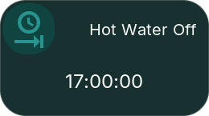
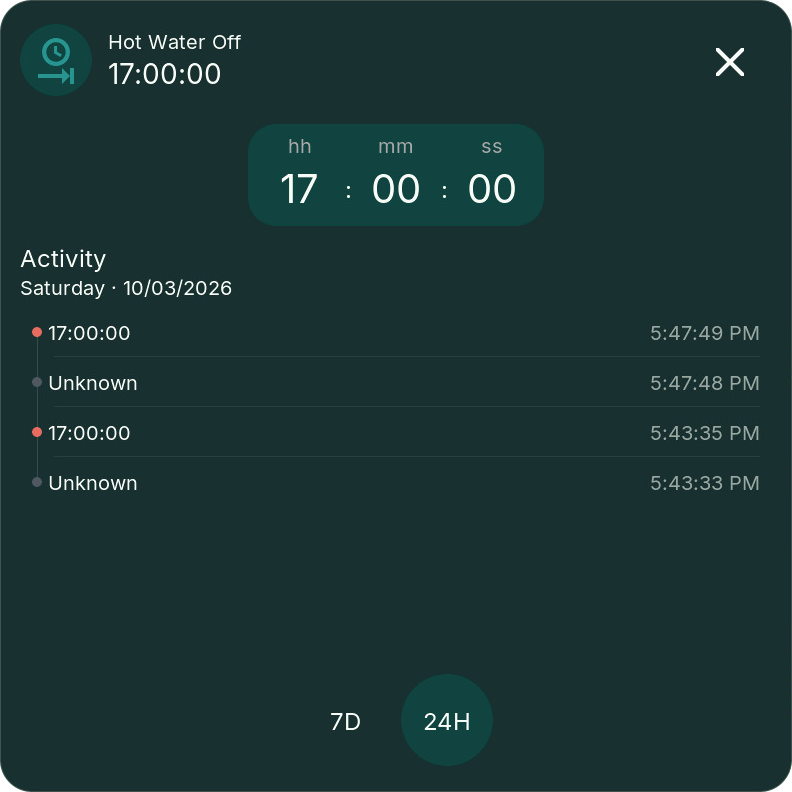
Time uses a single visible row of large, swipeable hh / mm / ss values, with wraparound between 23 and 00 or 59 and 00. Date fields use step controls without a keyboard.
Popup: the controls above Activity for 7D or 24H. Home Assistant's time zone is used for date/time commands.
Number, Select, and Date/Time need HomeTiles v0.6.10 and Bridge v0.6.44 or newer. Add them in Bridge Entity Configuration, then choose their entity, value size, and popup trigger in the Web Admin. Slider edits are sent on release; step and time edits are grouped after a short pause, and the display keeps your edit while a slow device confirms it. Unavailable entities cannot be changed.
Energy
Shows Home Assistant Energy Dashboard statistics for electricity, gas, water, or cost. Enable the matching Bridge energy category. Configure the energy entity, unit, decimals, and value size.
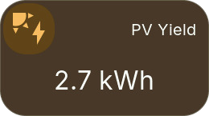
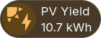
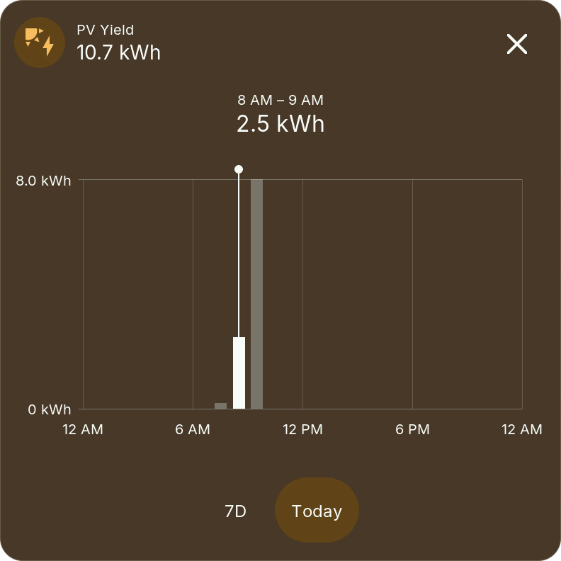
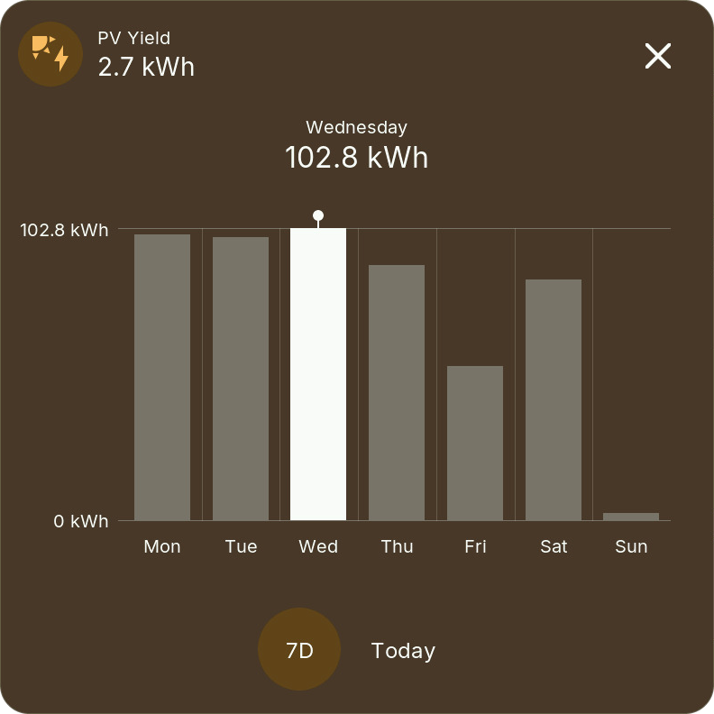
Popup: hourly bars for the day and daily bars for the week. Tap a bar to read its time and value; a dot marks the bar you read.
In this example, Sensor tiles show current power at the top; Energy tiles show today's totals at the bottom.
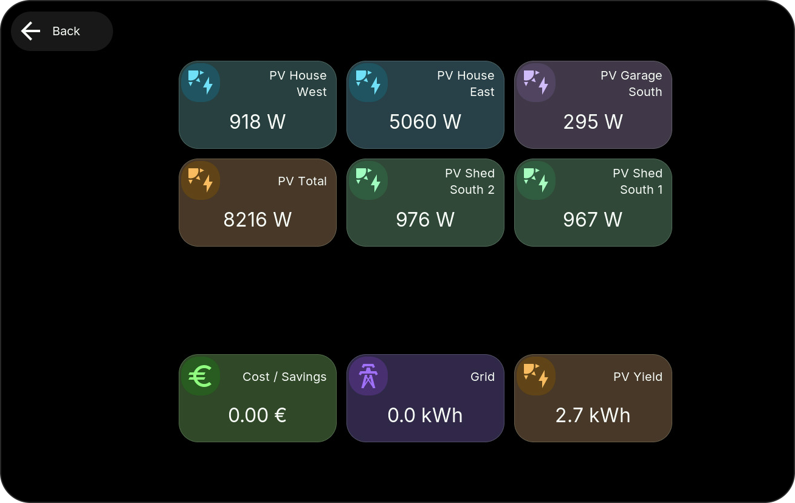
Switch
Toggles a compatible entity and reflects its state. Choose the entity, Layout, and popup trigger.
| Layout | Tile |
|---|---|
| Automatic | A dimmer bar for lights that can dim, otherwise the switch bar. Default for new tiles. |
| Dimmer | A brightness bar across the tile: press or drag to set the level, like the popup's brightness slider. Lights without dimming get the switch bar. |
| Switch | An on/off bar with a thumb, like the popup's switch. |
| Icon button | No bar: tap the tile to toggle. |
The tile shows the state (On, Off, or the brightness) under its title. Half-height tiles show the state only; tap toggles, and the other gesture opens the popup. Commands while dragging are paced like Home Assistant, and the last level is always sent.
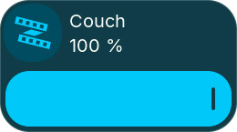
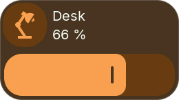
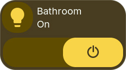
| Home Assistant domain | Tile action |
|---|---|
switch, light |
Turn on/off |
input_boolean |
Set a Toggle helper on/off |
automation |
Enable/disable the automation's triggers |
fan, humidifier, remote, siren |
Turn the entity on/off using its configured defaults |
The additional domains require Bridge v0.6.42 and the updated firmware. Select them under Switches / switchable entities in the Bridge; lights keep their own selector. Fan and Siren controls require both HA on/off feature flags. Missing, unavailable, or unsupported entities cannot be operated.
An automation switch enables/disables the automation; it does not run its actions immediately. Turning it off follows HA's default behavior and stops running actions. For fan speed, presets, and direction use the Fan tile; humidity, remote commands/activities, and siren tones are outside this tile's on/off controls.
Local outputs and relays appear in the same selector and work without Home Assistant.
Popup for lights: brightness, color, and color temperature; only the controls the light supports appear. The bottom icons switch views, and the power button toggles the light.
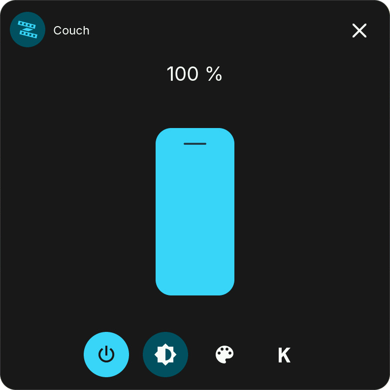
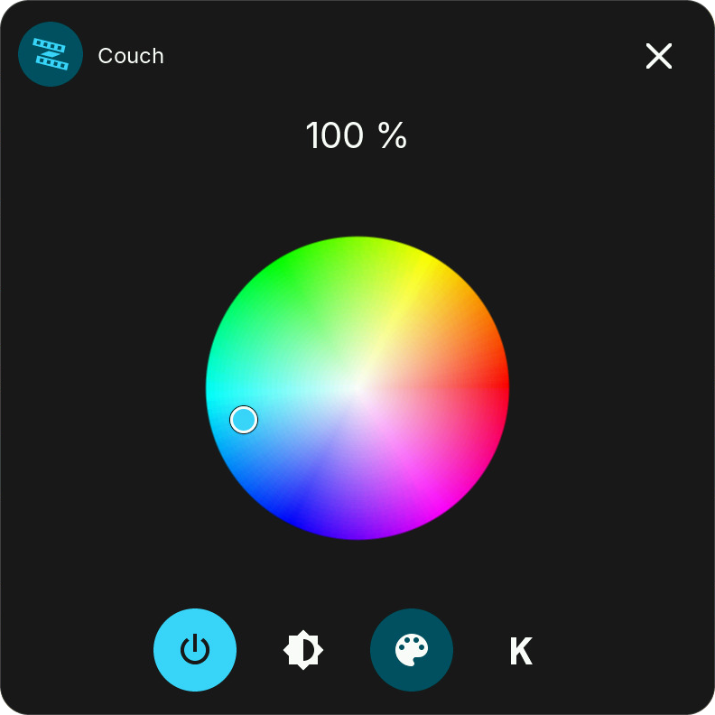
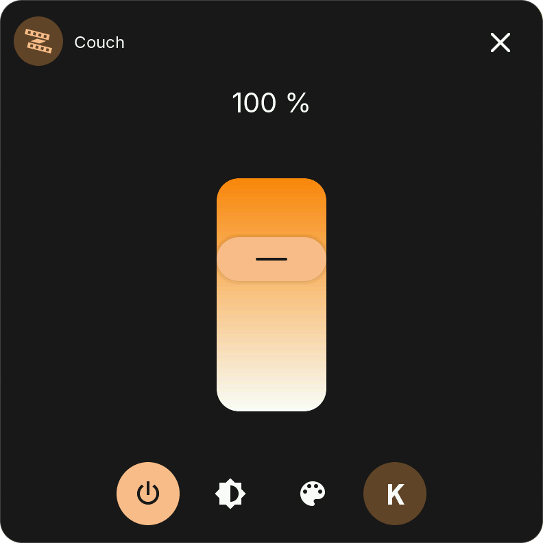
Popup for other compatible entities: the on/off slider in the same popup.
Cover
Controls a cover entity and shows its state and position when available.
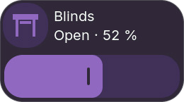
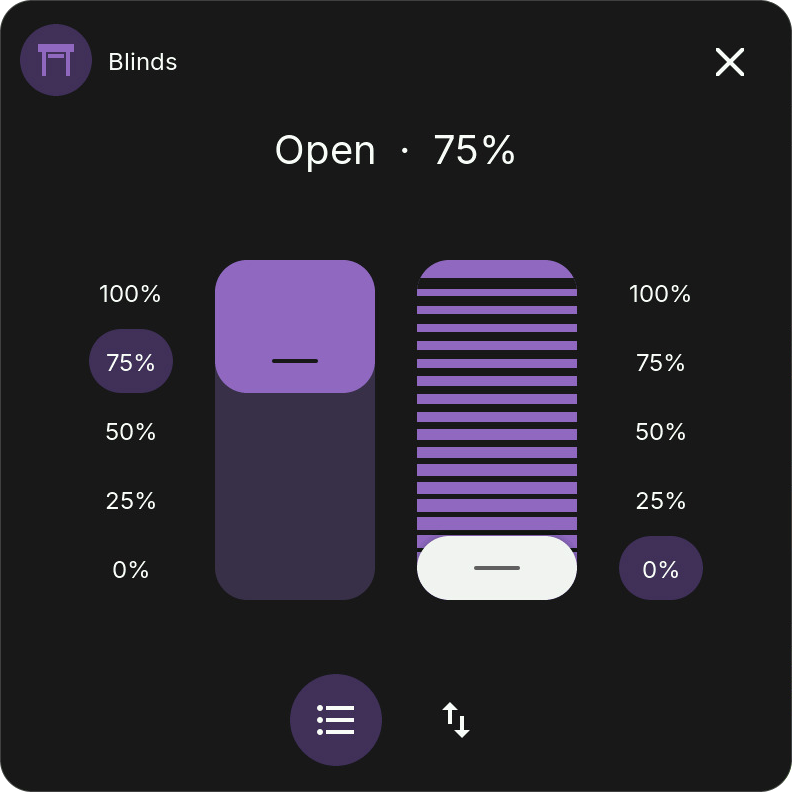
The tile shows the position as a bar, like the Switch dimmer; half-height tiles show the state only. While the cover opens or closes, its arrow pulses.
Popup: separate position and tilt sliders, or open, close, and stop buttons. Controls depend on the cover's capabilities and availability. A slider sends its position once on release, like Home Assistant, and then follows the reported position.
Scene
Runs a configured action with a tap; there is no popup. Choose the alias generated for it in the Bridge options.
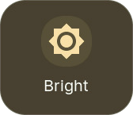
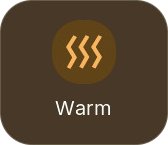
| Home Assistant domain | Tile action |
|---|---|
scene |
Activate the scene (scene.turn_on) |
script |
Start the script without additional fields (script.turn_on) |
button |
Press the button once (button.press) |
input_button |
Press the Button helper once (input_button.press) |
Buttons require Bridge v0.6.42 and the updated firmware. A never-pressed button remains usable even when HA reports an unknown timestamp. Missing or unavailable actions are ignored. Existing aliases remain stable when you reorder the selection or add entities with the same object name; custom aliases remain supported.
Use an HA script with defaults when an action needs parameters. Read-only binary_sensor and event entities cannot be pressed or switched. Locks, alarm panels, and fans have their own tiles; vacuums, valves, and update entities have different actions and are not mapped to these tile types; Cover, Climate, and Media keep their dedicated tiles.
Weather
Shows current conditions and the next days from a weather entity.
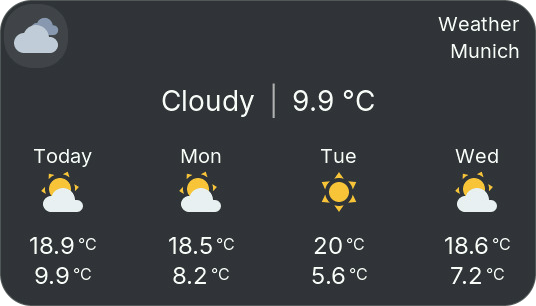
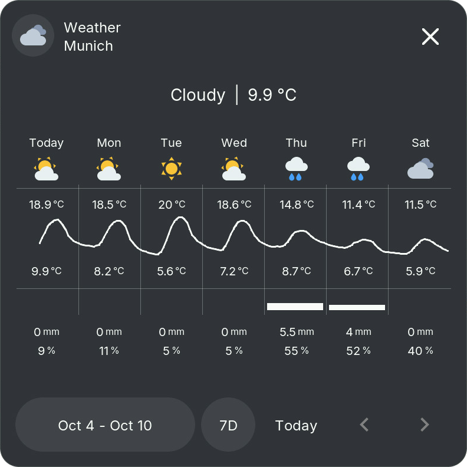
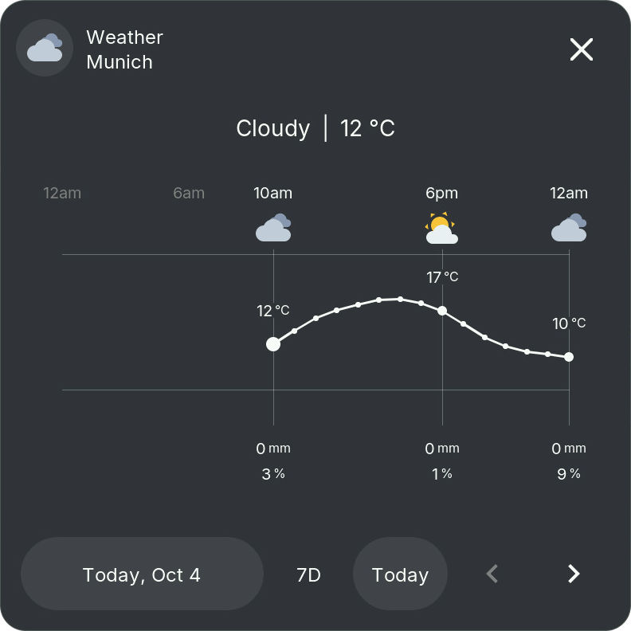
Popup: temperatures, precipitation, and rain probability. Use the arrows to browse the available forecast.
Icons: weather icons are filled and colored (sun gold, clouds grey, rain blue, snow ice blue, thunderstorms purple, wind teal, night grey blue). Turn off Colored weather icons in the tile settings to keep the white outlines. With Tile color: From icon, the tile takes the color of the current weather; an icon color you set yourself draws the whole icon in that color. When the bridge sends sunrise and sunset, partly cloudy and clear hours after sunset show the moon.
Media
Shows cover art, title, and playback controls for a media_player entity. Media tiles need at least 2×2 cells.
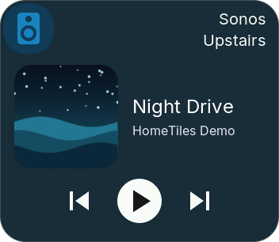
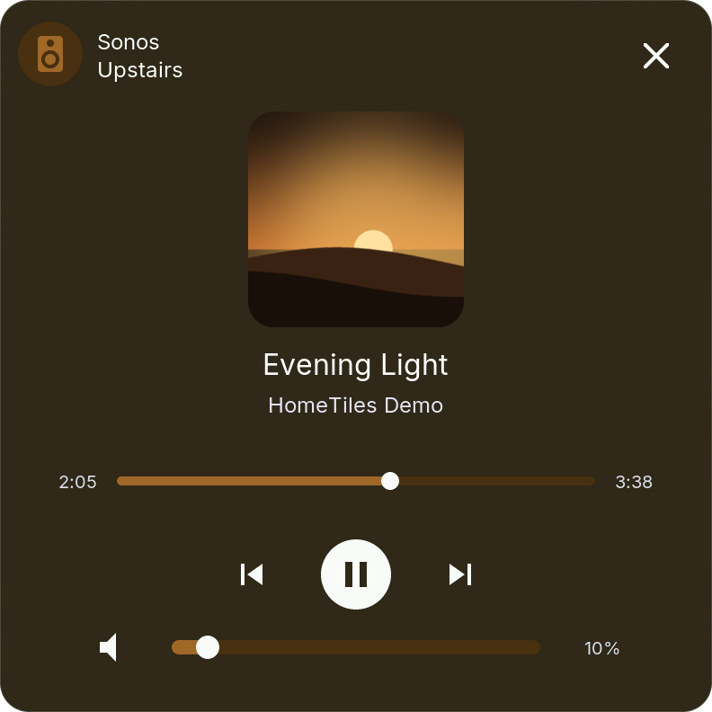
Popup: title and cover art with playback controls and volume.
Climate
Controls a climate entity. The icon and accent indicate active heating, cooling, drying, or fan operation.
Configure mini-tiles for temperatures, humidity, targets, and mode, or choose Automatic. Arrange them in the Climate mini-tile editor. Wide target controls show the active mode, such as Heat, Cool, or Auto, and a humidity target is labeled Humidity.
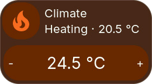
Popup: adjust the target with the dial or plus/minus buttons. Available controls may include heating/cooling targets, humidity, mode, presets, fan, and swing; longer option lists scroll.
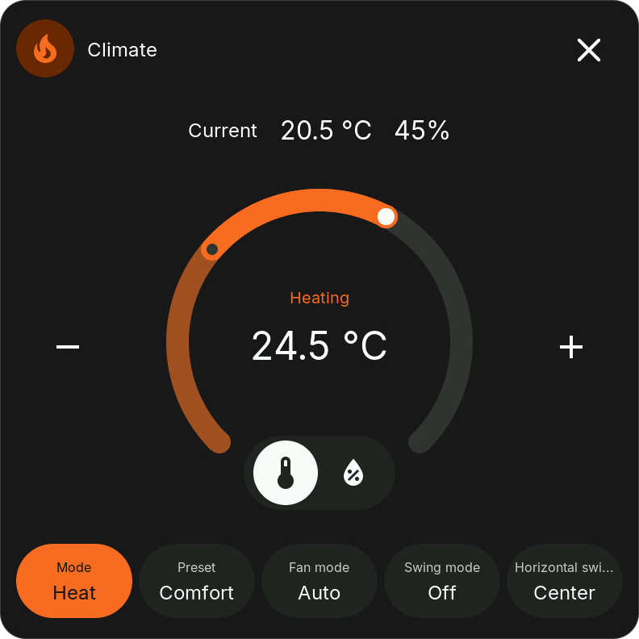
Fan
Controls a fan entity. Select it under Fans in the Bridge options; requires Bridge v0.8.0.
The tile shows the state and speed. Its bar sets the speed: stepless like the Switch dimmer, in segments for fans with only a few speeds, or as an on/off switch for fans without speed control. Tap or long press, whichever does not open the popup, switches the fan on or off.
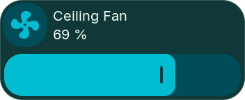
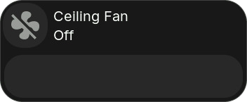
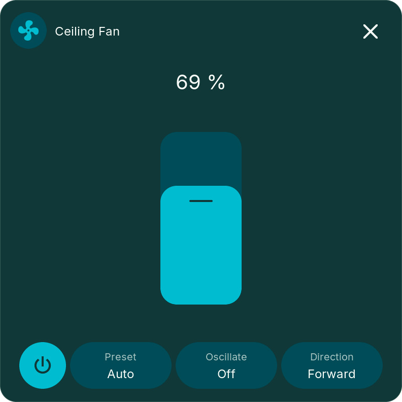
Popup: the speed above a large slider, and below it the power button and, when the fan supports them, preset, oscillation, and direction. Only the controls the fan reports appear.
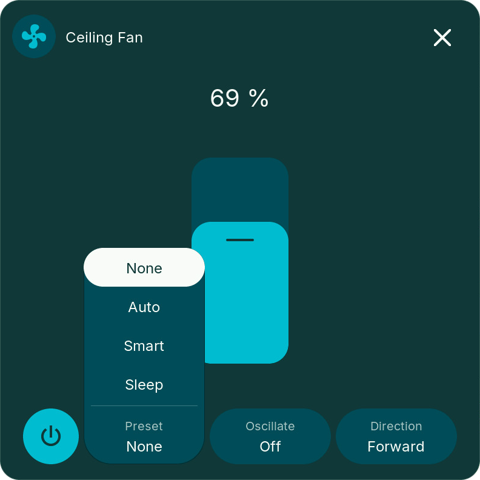
Lock
Controls a lock entity. Select it under Locks in the Bridge options; requires Bridge v0.8.0.
The tile shows the state in Home Assistant's colors: green while locked, red while unlocked, open, or jammed, orange while locking or unlocking. Its bar locks and unlocks; when the state is unknown or jammed it shows separate Unlock and Lock buttons.
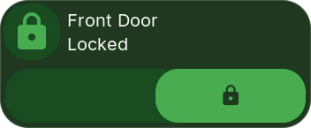
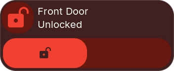
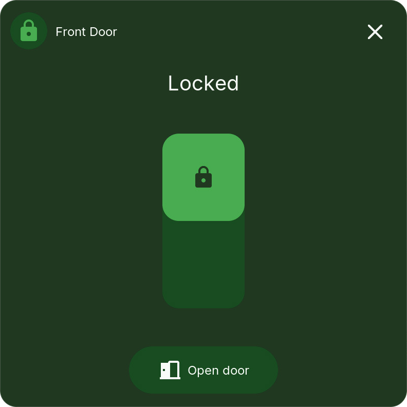
Popup: a switch (up = locked) and, for locks that can open the door, Open door with a second tap to confirm. When Home Assistant needs a code, the code entry opens first.
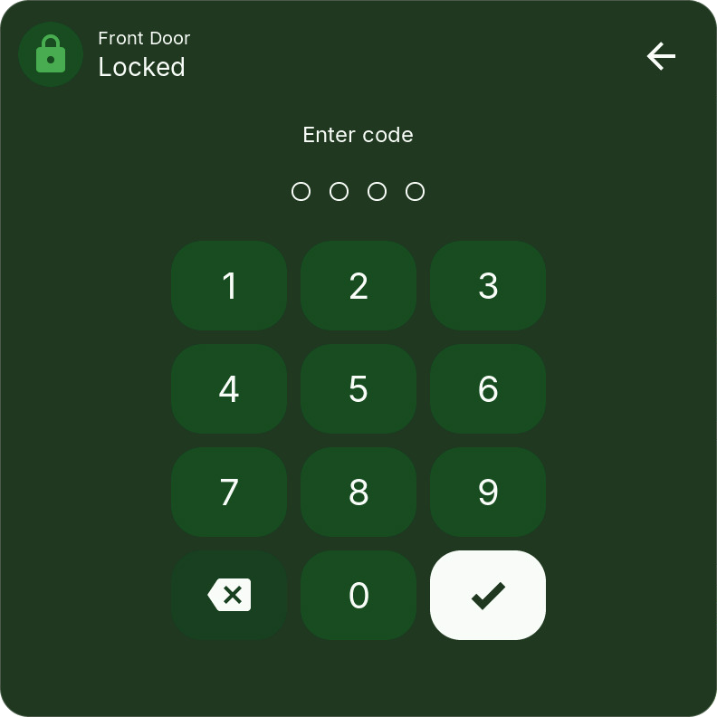
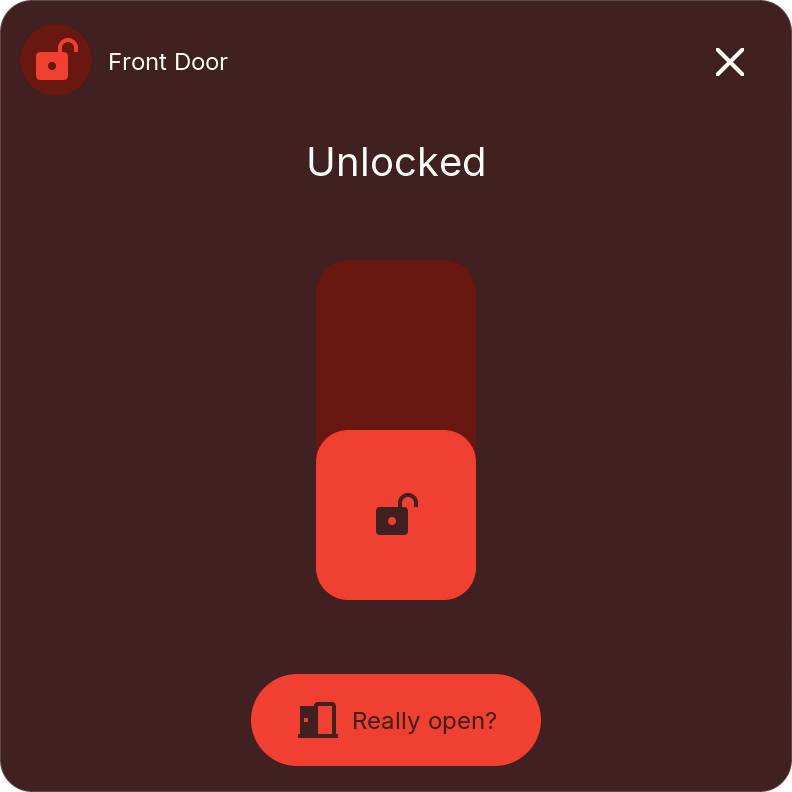
Alarm Panel
Controls an alarm_control_panel entity. Select it under Alarm panels in the Bridge options; requires Bridge v0.8.0.
The tile shows the state in Home Assistant's colors: green while armed, orange while arming, pending, or disarming, red when triggered, grey while disarmed. Its bar holds Disarm and the arming modes that fit.
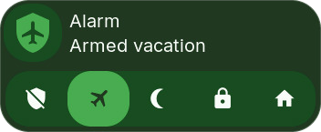
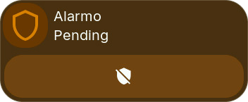
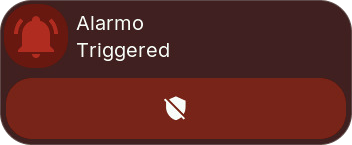
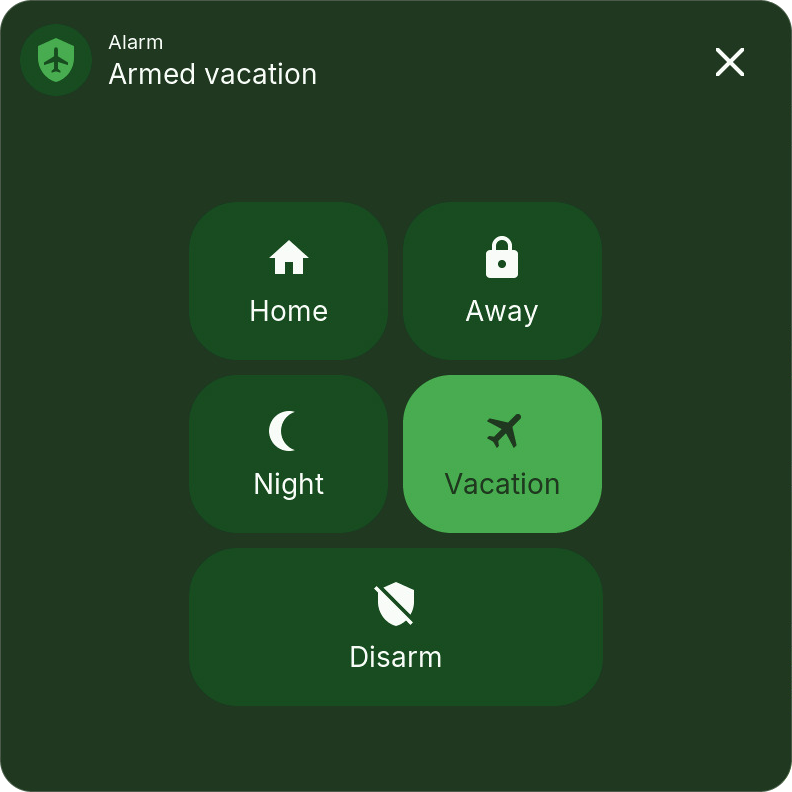
Popup: the modes the panel supports (Home, Away, Night, Vacation, Custom) and Disarm. While the panel arms, waits, disarms, or is triggered, only Disarm remains. When Home Assistant needs a code, the code entry opens first.
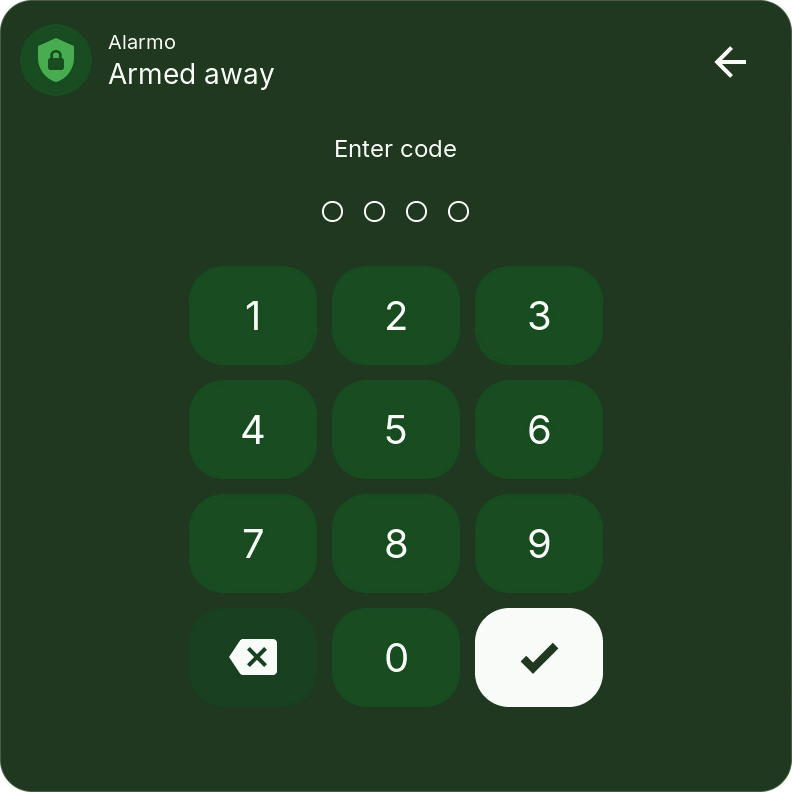
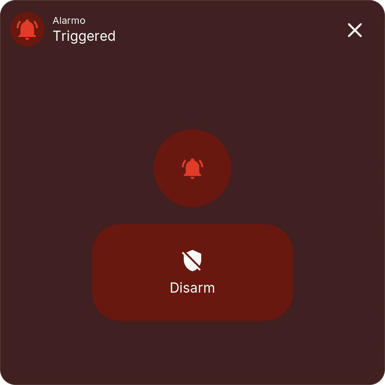
Lock and Alarm Panel security: both run commands only on a panel with encrypted commands and a Web Admin password; otherwise the tile and popup say what is missing. Home Assistant checks every code as in its own UI; unlocking, opening, and disarming always need the entity's code. A device without its own code can only be unlocked, opened, or disarmed when it is listed under Allow opening without a code in the Bridge options. For devices that ignore a wrong code, enter their codes under Codes for locks and alarm panels so the Bridge checks them; after five wrong codes, code entry is blocked for a while. Numeric codes are supported; devices that need a text code must be operated in Home Assistant.
Lock and Alarm Panel tiles show only states the device reports: a command waits with the icon pulsing, and the popup says so when the device does not answer. They are not available on the screensaver.
Camera (experimental)
Opens a 16:9 video popup on ESP32-P4. Select the camera in the Bridge's Entity Configuration, then assign it to this tile. The camera can also be the built-in camera of another HomeTiles display.
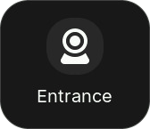
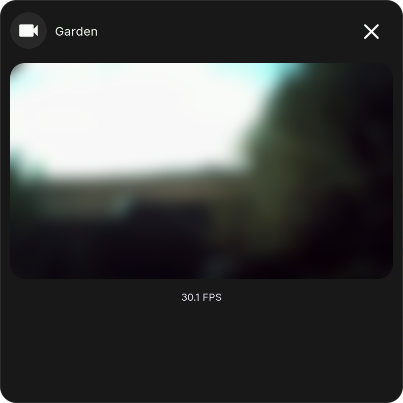
Allow local TCP access to the Home Assistant host on ports 8124–8131. See Camera connection for requirements and performance notes. Camera tiles are unavailable on ESP32-S3.
Local Tiles
These types work without Home Assistant.
Clock
Shows time and date using the device's localization settings. You can override the formats and sizes for each tile and hide its border. Tap it to open the screensaver.
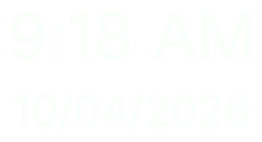
Text
A static label with a selectable font size. Its border can be hidden per tile.
Folder
Opens a sub-page with its own grid and an automatic back tile. See Folders for setup and optional PIN protection.
A folder tile can follow an entity inside it: with rules and Entity color, a Climate folder turns orange while heating and blue while cooling. The back tile has its own icon, color, border, and size.
A protected folder asks for its PIN before it opens. The PIN pad takes the folder tile's color and shows the folder's name with the state Locked; below Enter PIN, one dot appears per typed digit. The PIN has 4 to 8 digits.
Animation
Plays a .panim pixel animation from /animations on microSD. Configure frame rate, fit, and zoom.
Empty
Leaves an empty cell for spacing.